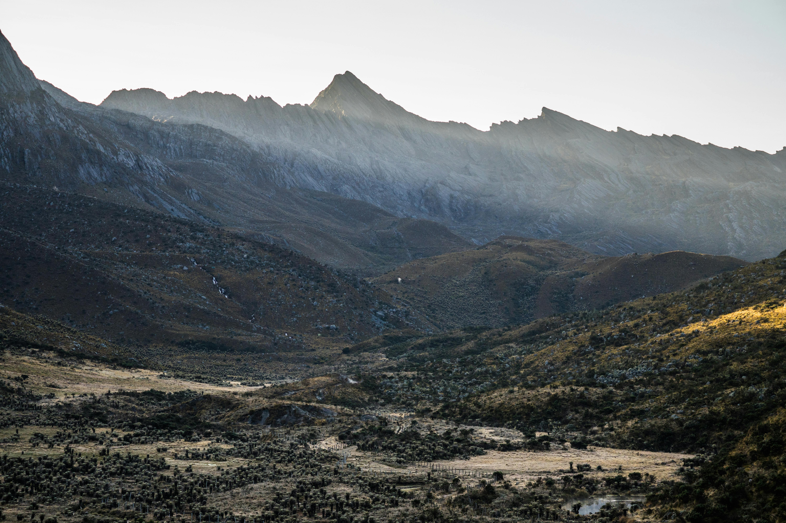

My Travel Experience
This park, located between the departments of Boyacá, Arauca, and Casanare, boasts a wide variety of ecosystems such as Andean forests, páramos, and glaciers, perfect for hiking and enjoying the landscapes. The park holds a rich history and culture, and is also home to a diverse range of plant and animal species. Currently, the glaciers are disappearing, so the time to visit is now!
Home